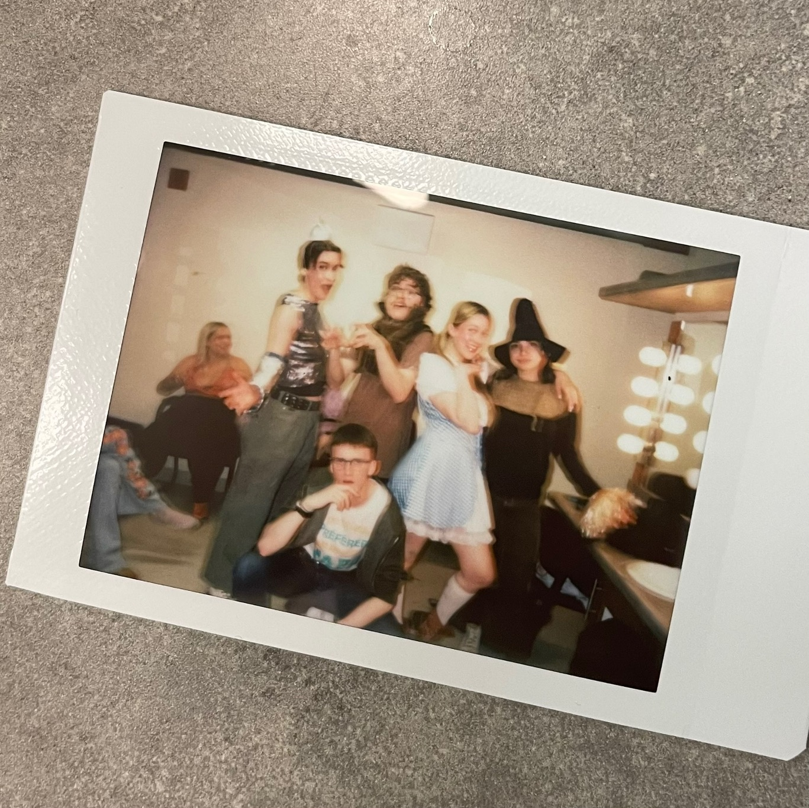

Le Magicien d'OZ et les aventuriers de ChatGPT
Activité synthèse (Cégep Limoilou) | Mise en scène & co-écriture
Ce projet, fruit de 5 mois de travail intensif, a été un véritable point de bascule dans mon parcours. Conçu comme une satire sur l’utilisation parfois aveugle de l’intelligence artificielle, il est ma première véritable expérience de mise en scène.
Le processus d’écriture, mené en tandem avec mon collègue Antoine, s'est nourri d'allers-retours constants entre la table et la salle de répétition, selon les retours de l’équipe lors de lectures. Nous partions parfois même de canevas structurés pour laisser place aux improvisations des acteurs, réintégrant leurs trouvailles dans le texte final.
C'est là que j'ai découvert l'essence du rôle de metteur en scène : l'écoute. J'ai compris que diriger, ce n'est pas imposer une vision unique, mais savoir capter les sensibilités et les spécialités de chaque membre de l'équipe (jeu, technique, conception) pour faire des choix finaux plus riches. Cette collaboration a forgé mes décisions et donné au spectacle une couleur que je n'aurais jamais pu imaginer seul.
Au-delà de la direction d'acteurs, ce projet a éveillé mon intérêt pour la conception technique. J'ai découvert le pouvoir narratif de la lumière et de l'environnement sonore. Je cherche désormais à intégrer ces outils dès la genèse de mes mises en scène, avec une vigilance constante : que la technique ne soit jamais gratuite, mais qu'elle serve toujours la cohérence dramaturgique et le propos de l'œuvre.
Avec le recul, je perçois aujourd'hui certaines fragilités dramaturgiques et de mise en scène que je traiterais différemment pour donner plus de force au propos. Cependant, la clarté du résultat final, pour un projet étudiant, et le plaisir immense pris à orchestrer cette création collective m'ont confirmé une chose : c'est dans la mise en scène que je veux évoluer.
Galerie (aperçu)
Voir toutes les photos


Extraits vidéos
Distribution des rôles et crédits
Mise en scène : Alexandre Albaret.
Écriture : Alexandre Albaret & Antoine Letourneau (en collaboration avec Laurence Lavoie, Noémie Bélisle et Éloise L’Hérault-Blanchet).
Conception technique (Lumière, Son, Projection et Vidéo) : Alexandre Albaret (avec le soutien de l’équipe technique de la salle Sylvain Lelièvre du Cégep Limoilou).
Interprétation : Antoine Letourneau, Laurence Lavoie, Noémie Bélisle, Éloise L’Hérault-Blanchet et Alexandre Albaret.
Scénographie (Costumes et Accessoires) : Laurence Lavoie, Noémie Bélisle et Éloise L’Hérault-Blanchet.
Scénographie (Décors) : Mélanie Robinson.
Accompagnement créatif : Annabelle Pelletier-Legros.